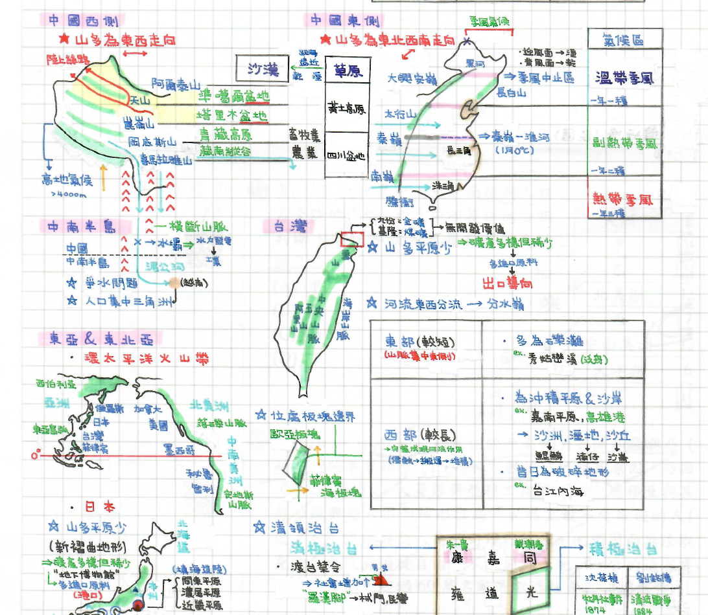
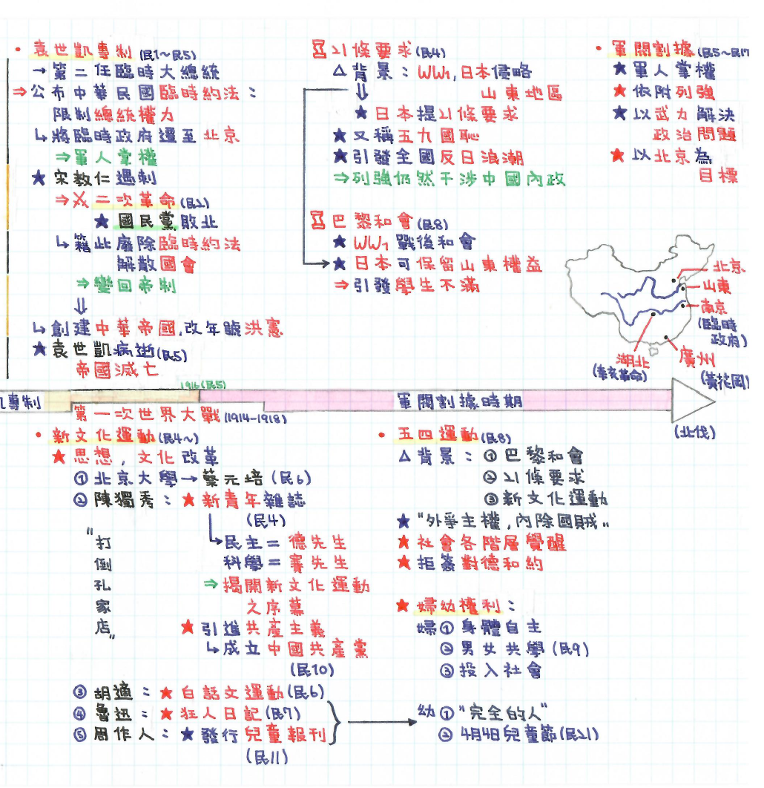
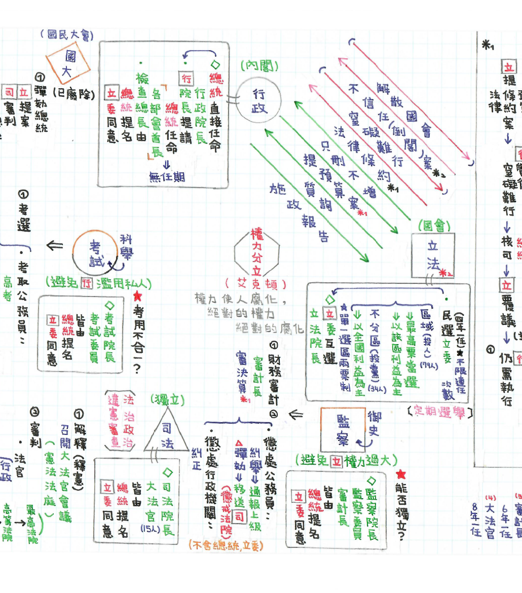
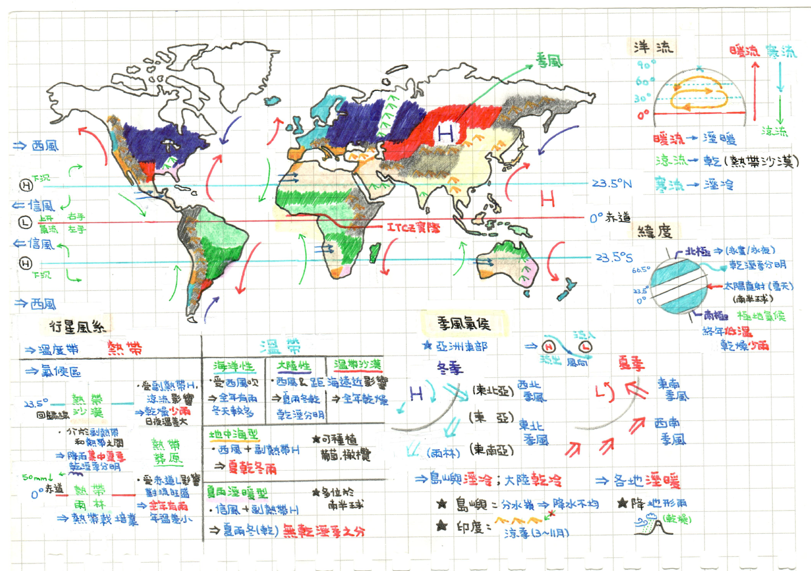
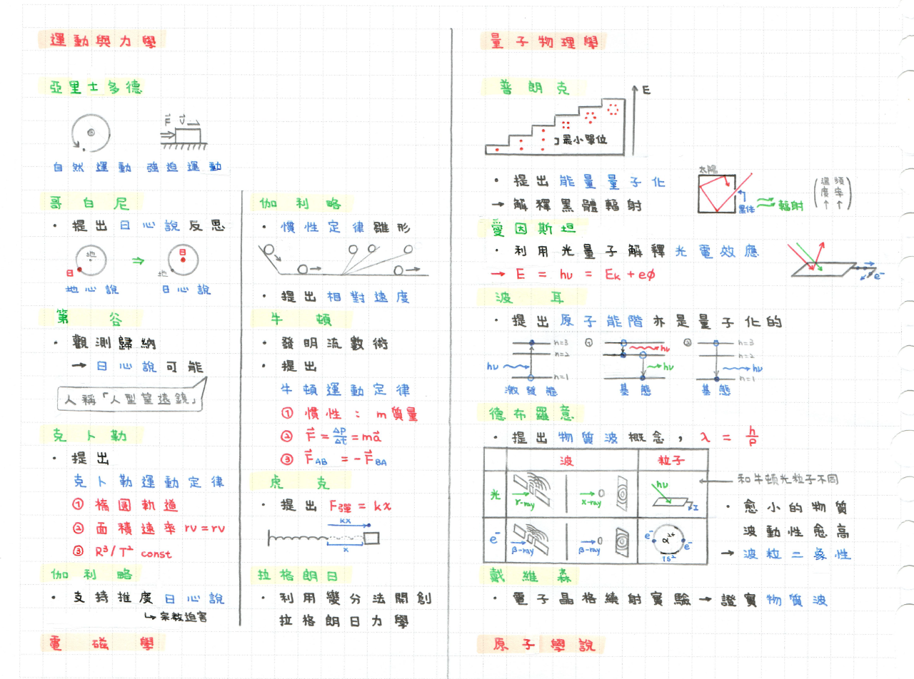
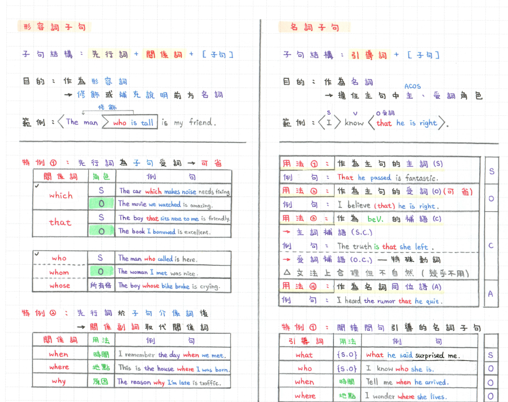
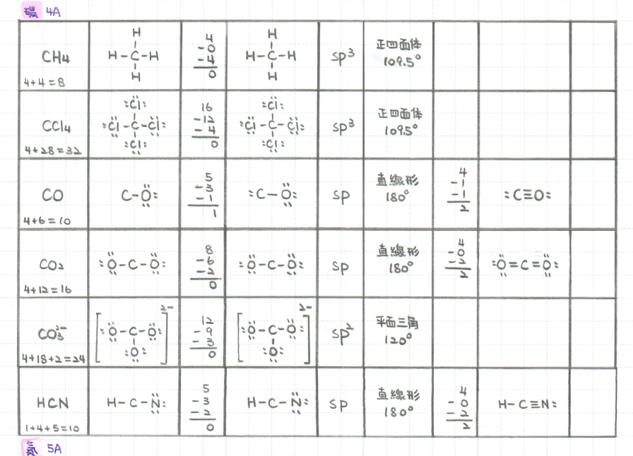

地理地理
地理基礎概念整理，涵蓋地形、氣候與人文地理。
開啟 PDF
PDF
這一切從一個觀察開始：比起硬背，我更擅長理解結構。
學習習慣的形成
我很早就意識到，對需要大量背誦的科目我並不擅長， 但對數理邏輯與結構化內容相對容易上手。
從國中開始，我在準備考試時養成了一個固定方法—— 把整個章節整理成一份 A4 筆記。 這個過程不只是抄寫，而是一種重新理解內容的方式。
「整理筆記的過程其實不只是抄寫，而是一種 重新理解內容的方式。」
電子化的動機
學測結束後，有了比較充裕的時間， 我開始重新思考這些筆記的意義。 留在紙本，可能隨時間散失； 整理成數位檔案，就可以長期保存與回顧。
於是我把從國中到高中仍然找得到的筆記重新整理， 不只是掃描，而是依照科目與主題重新分類， 建立一個清楚的資料結構。
「這個筆記整理專案和我其他的程式專案有相同的核心—— 把原本零散的資訊整理成一個清楚的結構。」
依時期分類，點擊卡片即可開啟 PDF 檔案。

地理地理基礎概念整理，涵蓋地形、氣候與人文地理。

歷史中國歷史脈絡整理，依朝代與重要事件結構化呈現。

公民公民核心概念，涵蓋政治制度與法律基礎架構。

地理氣候系統重整版，重新梳理氣候類型分布與成因架構。

科學史科學發展的脈絡與重要事件，橫跨物理、化學與生命科學。
學測複習用生物筆記，系統整理細胞結構、功能與代謝流程。

英文子句類型與用法整理，涵蓋名詞子句、形容詞子句與副詞子句。

化學有機化學結構式整理，涵蓋常見官能基與命名邏輯。
每一份筆記的誕生，都經過以下流程。
使用 A4 紙手寫，黑筆書寫主要內容，彩色筆標註重點。 邊寫邊重新思考內容結構。
A4 以下使用 Adobe Scan，A4 以上使用影印機掃描， 確保畫質清晰且適合長期保存。
所有文件轉換為 PDF 格式，依科目與年份分類存放， 建立清楚的目錄結構。
使用 GitHub 管理所有檔案，提供版本紀錄、公開分享 與長期備份。